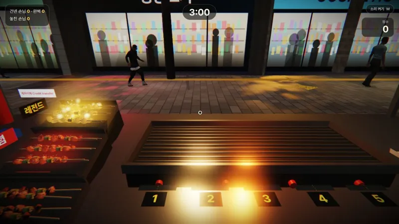
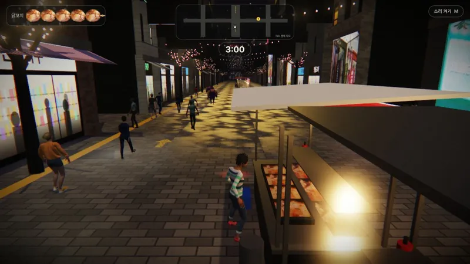
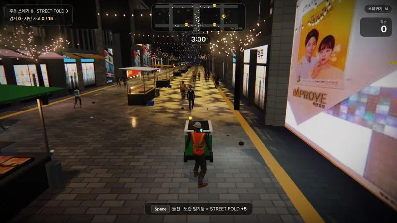

PRODUCT 01 — 2030 명동 거리
STREET FOLD & FOLD MARK
- 저녁 7시, 명동길 노점 앞.
- 38명이 꼬치를 들고 서성입니다.
- 한 골목만 들어가면, 빈 테이블 12개.
- 걸어서 1분.
- 그 1분을 잇는 두 가지를 만들었습니다.
VOICE 00:00:00
2026 명동 현장 관찰을 바탕으로 재구성한 목소리
PRODUCT 01 — 2030 명동 거리
STREET FOLD & FOLD MARK
노점에서 받은 스티커 한 장이, 골목의 빈 테이블을 엽니다.
- 노점 카운터 · FOLD MARK사장님이 툭, 칩니다.
- 윗면 틈약도 한 장이 스르륵 나옵니다.
- 트레이 옆면스티커를 붙여 그대로 건넵니다.
- 골목으로 1분약도를 따라 걷습니다.
- STREET FOLD · 인식 창스티커를 대면 판이 내려옵니다.
- 아래 모듈다 먹은 트레이는 그 자리에서 버립니다.
- 마지막은 사람 손으로판을 올려 접고 갑니다.
위에서 FOLD MARK 소개를 끝까지 보면 열립니다.
직접 쳐 보세요.
끌어서 돌려 보고, 가까이 보고, 앞쪽의 회색 주먹 패드를 눌러 스티커를 뽑아 보세요.
앞 빛 띠가 말해 주는 것
- 1테이블 번호골목 STREET FOLD 꼭대기 번호등과 같은 숫자
- 2가는 길노점을 등진 방향부터, 꺾는 곳은 두 번까지
- 3도착 · 유효 시각이 시간까지 자리를 비워 둡니다
- 4대는 곳트레이째 테이블에 대면 판이 내려옵니다
회색 패드를 누르면 새 스티커가 나옵니다.
위에서 STREET FOLD 소개를 끝까지 보면 열립니다.
STREET FOLD
부위를 눌러 보세요.
점이나 왼쪽 목록을 누르면 그 부분으로 다가가 움직임과 설명을 보여 줍니다. 끌어서 돌려 볼 수도 있습니다.
03 — HOW IT CONNECTS
입력툭 · 댐주먹 한 번, 트레이 한 번
AI 판단빈자리 · 가는 길얼굴·개인 정보는 쓰지 않음
물리적 반응인쇄 · 펼침 · 기울임판을 올리는 건 사람 손
04 — PLAY · 체험 게임
직접 겪어 보는 명동의 밤.
같은 거리를 세 사람의 입장에서.

▶ 체험 게임사장님
1인칭 · 3분
주문을 받고, 닭꼬치를 굽고, FOLD MARK 스티커를 붙여 건넵니다.
해 보기 ↗
▶ 체험 게임손님
3인칭 · 3분
닭꼬치를 지키며 인파를 뚫고, 트레이를 올려 먹을 STREET FOLD를 찾아갑니다.
해 보기 ↗
▶ 체험 게임환경미화원
3인칭 · 3분
전동 수거차로 쓰레기를 줍고, STREET FOLD를 들르고, 무단투기범을 잡습니다.
해 보기 ↗키보드와 마우스로 진행합니다 · 처음 열 때 거리와 사람을 불러오느라 몇 초 걸립니다 · 게임 안에서 ESC 로 멈춤
05 — SPECS
거리에서 오래 쓰도록.

- STREET FOLD
- 340 × 160 × 2,080 mm판을 펼치면 앞으로 228 mm · 판 높이 약 980 mm
- FOLD MARK
- 168 × 110 × 50 mm앞 끝 높이 30 · 차콜 U자 홈 폭 54 → 38, 깊이 6 · 스티커 폭 58, 출구 60 · 50°로 위로 출력 (치는 각도 = 뽑는 각도)
- 소재
- 무광 플라스틱 몸체몸체 아이보리 · 주먹 패드 차콜 · 뒤 뚜껑은 몸체와 같은 색(비스듬한 이음선, 뒤로 열어 카트리지 교체) · 앞 조명 띠 호박색
- 설치
- 골목 벽 쪽 고정보행 흐름을 막지 않는 깊이 160 mm
- 입력 · 출력
- 주먹 패드 · QR 대기스티커 · 빛 선 · 디스플레이 · 번호등 · 판 · 쓰레기통 기울임